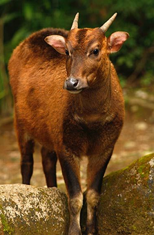

Anoa Depressicornis
(Anoa Dataran Rendah)
Anoa Depressicornis, atau Anoa Dataran Rendah, adalah salah satu mamalia berendemik Sulawesi. Hewan ini berstatus terancam punah akibat perburuan liar dan penyusutan habitat hutan. Anoa dikenal sebagai pemakan tumbuhan yang berperan penting menjaga regenerasi vegetasi hutan serta menyebarkan biji melalui kotorannya. Keberadaannya juga memiliki nilai budaya karena dianggap sebagai satwa khas Sulawesi yang unik di dunia.
Populasi satwa ini terus menurun dan kini berstatus Sangat Terancam Punah (Endangered) akibat deforestasi, perburuan, dan konflik dengan manusia, menjadikannya salah satu mamalia yang paling rentan di Indonesia dan membutuhkan upaya konservasi serius.